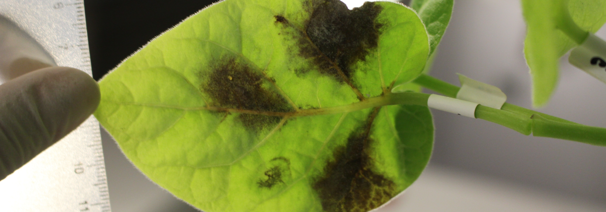
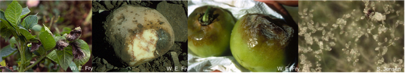
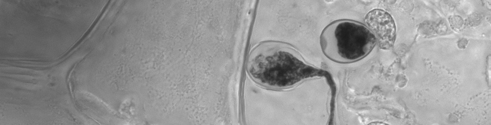

Tizón Latino
Phytophthora infestans
¿Quiénes somos?
Noticias y eventos de la red
Recursos de investigación



Tizón Latino
Red latinoamericana de cooperación para el estudio del tizón tardío de las solanáceas
Nuestros miembros
Silvia Restrepo, PhD
Coordinador Norte de Sur América y fenotipificación
See Profile
Giovanna Danies, PhD
to be defined
See Profile